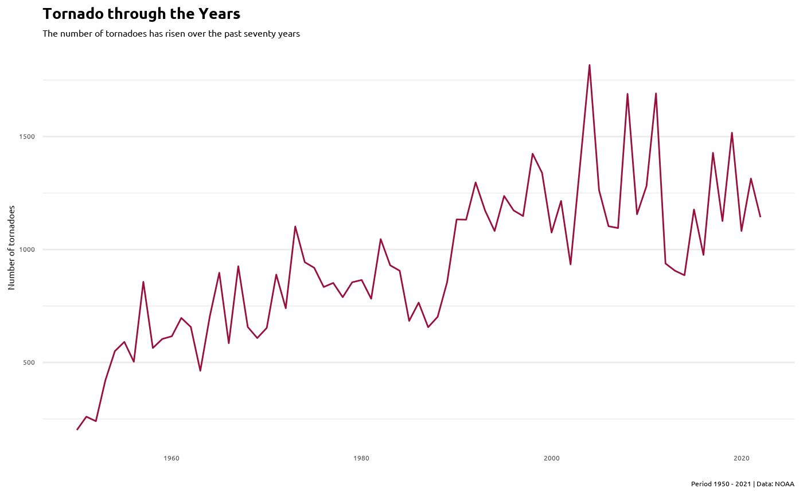
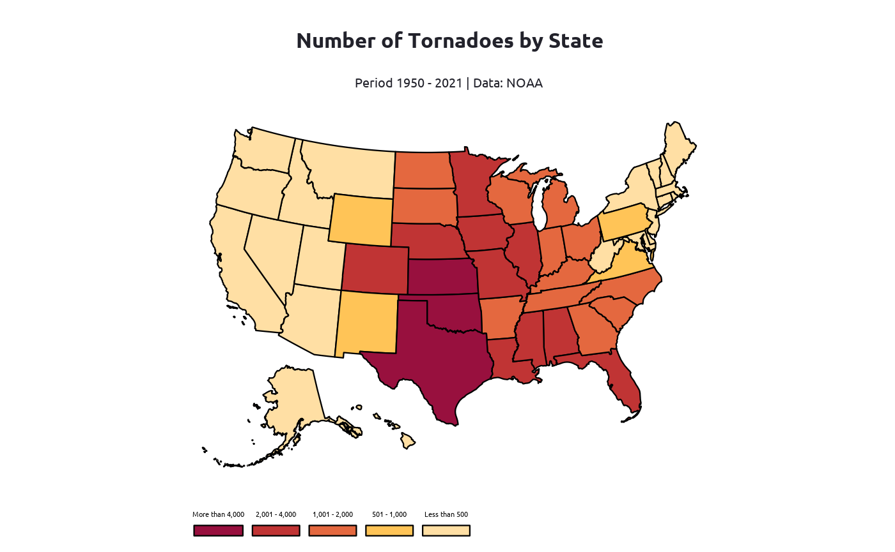
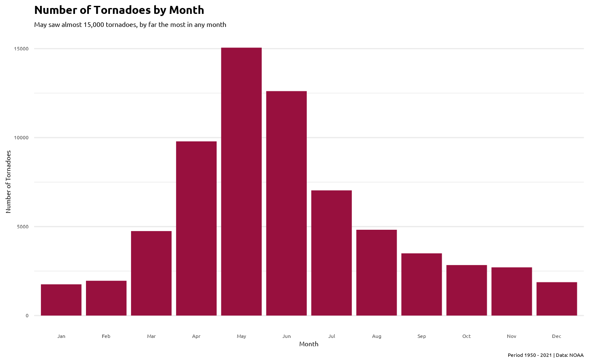
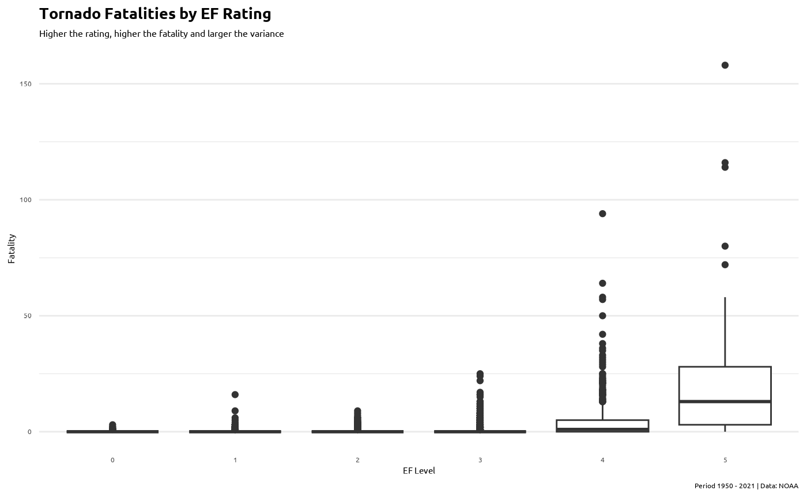

4. Example Analysis
Yingying Yu
2023-12-03
Source:vignettes/example_analysis.Rmd
example_analysis.RmdDiving into US Tornado Data
This page is created for an exercise for the BSPH course Statistical Programming Paradigms and Workflows (140.777), and it demonstrates some of the functions in the package with example data from TidyTuesday. Codes are revisited from Evan Gower’s post on Kaggle.
In this analysis, I am trying to understand how many tornadoes happened through the years from 1950 to 2021? Where do tornadoes usually occur? What are the fatalities caused by tornadoes by states? The source data comes from NOAA’s National Weather Service Storm Prediction Center Severe Weather Maps, Graphics, and Data Page, The data dictionary can be found here.
0. Load the data
library(here)
#> here() starts at /Users/michelleyu/Desktop/JHU/Statistical Programming Paradigms and Workflows/Project3/usmap
library(tidyverse)
#> ── Attaching core tidyverse packages ──────────────────────── tidyverse 2.0.0 ──
#> ✔ dplyr 1.1.3 ✔ readr 2.1.4
#> ✔ forcats 1.0.0 ✔ stringr 1.5.1
#> ✔ ggplot2 3.4.4 ✔ tibble 3.2.1
#> ✔ lubridate 1.9.3 ✔ tidyr 1.3.0
#> ✔ purrr 1.0.2
#> ── Conflicts ────────────────────────────────────────── tidyverse_conflicts() ──
#> ✖ dplyr::filter() masks stats::filter()
#> ✖ dplyr::lag() masks stats::lag()
#> ℹ Use the conflicted package (<http://conflicted.r-lib.org/>) to force all conflicts to become errors
if (!file.exists(here("data", "tuesdata_drugs.rda"))) {
tuesdata <- tidytuesdayR::tt_load("2023-05-16")
tornados <- tuesdata$tornados
# save the files to rda objects
save(tornados, file = here("data", "tuesdata_tornados.rda"))
}
#> --- Compiling #TidyTuesday Information for 2023-05-16 ----
#> --- There is 1 file available ---
#> --- Starting Download ---
#>
#> Downloading file 1 of 1: `tornados.csv`
#> --- Download complete ---
load(here("data", "tuesdata_tornados.rda"))
glimpse(tornados)
#> Rows: 68,693
#> Columns: 27
#> $ om <dbl> 192, 193, 195, 196, 197, 194, 198, 199, 200, 201, 4, 5, 6…
#> $ yr <dbl> 1950, 1950, 1950, 1950, 1950, 1950, 1950, 1950, 1950, 195…
#> $ mo <dbl> 10, 10, 11, 11, 11, 11, 12, 12, 12, 12, 1, 1, 1, 1, 1, 1,…
#> $ dy <dbl> 1, 9, 20, 20, 20, 4, 2, 2, 2, 2, 13, 25, 25, 26, 3, 3, 3,…
#> $ date <date> 1950-10-01, 1950-10-09, 1950-11-20, 1950-11-20, 1950-11-…
#> $ time <time> 21:00:00, 02:15:00, 02:20:00, 04:00:00, 07:30:00, 17:00:…
#> $ tz <chr> "America/Chicago", "America/Chicago", "America/Chicago", …
#> $ datetime_utc <dttm> 1950-10-02 03:00:00, 1950-10-09 08:15:00, 1950-11-20 08:…
#> $ st <chr> "OK", "NC", "KY", "KY", "MS", "PA", "IL", "IL", "AR", "IL…
#> $ stf <dbl> 40, 37, 21, 21, 28, 42, 17, 17, 5, 17, 5, 29, 17, 48, 29,…
#> $ mag <dbl> 1, 3, 2, 1, 1, 3, 2, 3, 3, 1, 3, 2, 2, 2, 3, 3, 1, 2, 3, …
#> $ inj <dbl> 0, 3, 0, 0, 3, 1, 3, 25, 0, 0, 1, 5, 0, 2, 3, 3, 1, 0, 12…
#> $ fat <dbl> 0, 0, 0, 0, 0, 0, 1, 2, 0, 0, 1, 0, 0, 0, 0, 0, 0, 0, 1, …
#> $ loss <dbl> 5e+04, 5e+05, 5e+05, 5e+05, 5e+04, 5e+05, 5e+04, 5e+06, 5…
#> $ slat <dbl> 36.73, 34.17, 37.37, 38.20, 32.42, 40.20, 38.97, 38.75, 3…
#> $ slon <dbl> -102.52, -78.60, -87.20, -84.50, -89.13, -76.12, -90.05, …
#> $ elat <dbl> 36.88, 0.00, 0.00, 0.00, 0.00, 40.40, 39.07, 38.90, 36.18…
#> $ elon <dbl> -102.30, 0.00, 0.00, 0.00, 0.00, -75.93, -89.72, -89.38, …
#> $ len <dbl> 15.8, 2.0, 0.1, 0.1, 2.0, 15.9, 18.8, 18.0, 7.8, 9.6, 0.6…
#> $ wid <dbl> 10, 880, 10, 10, 37, 100, 50, 200, 10, 50, 17, 300, 100, …
#> $ ns <dbl> 1, 1, 1, 1, 1, 1, 1, 1, 1, 1, 1, 1, 1, 1, 2, 1, 1, 1, 1, …
#> $ sn <dbl> 1, 1, 1, 1, 1, 1, 1, 1, 1, 1, 1, 1, 1, 1, 0, 1, 1, 1, 1, …
#> $ f1 <dbl> 25, 47, 177, 209, 101, 71, 119, 119, 65, 157, 113, 93, 91…
#> $ f2 <dbl> 0, 0, 0, 0, 0, 11, 117, 5, 0, 0, 0, 0, 0, 0, 0, 0, 0, 0, …
#> $ f3 <dbl> 0, 0, 0, 0, 0, 0, 0, 0, 0, 0, 0, 0, 0, 0, 0, 0, 0, 0, 0, …
#> $ f4 <dbl> 0, 0, 0, 0, 0, 0, 0, 0, 0, 0, 0, 0, 0, 0, 0, 0, 0, 0, 0, …
#> $ fc <lgl> FALSE, FALSE, FALSE, FALSE, FALSE, FALSE, FALSE, FALSE, F…1. Prepare and wrangle data
# delete several columns
data <- tornados[, c("om","yr","mo","date","st","fat","mag")]2. Tornadoes through the years
Before we start in are main dive, lets look to see how many tornadoes were there from the time period 1950 to 2021.
# Count the number of tornadoes
data %>% count() %>% print()
#> # A tibble: 1 × 1
#> n
#> <int>
#> 1 68693
# Summarise average tornadoes by year
yearly_tornado <- data %>%
group_by(yr) %>%
count()
# Add custom font
if (!requireNamespace("showtext", quietly = TRUE)) {
install.packages("showtext")
}
library(showtext)
#> Loading required package: sysfonts
#> Loading required package: showtextdb
font_add_google("Ubuntu")
font_labels <- "Ubuntu"
showtext_auto()
# Plot data
if (!requireNamespace("ggplot2", quietly = TRUE)) {
install.packages("ggplot2")
}
library(ggplot2)
ggplot(yearly_tornado, aes(yr, n)) +
geom_line(color = "#98103E") +
labs(title = "Tornado through the Years",
subtitle = "The number of tornadoes has risen over the past seventy years",
caption = "Period 1950 - 2021 | Data: NOAA",
x = "",
y = "Number of tornadoes") +
theme_minimal() +
theme(text = element_text(family = font_labels, color = 'black'),
plot.title = element_text(size = 20, face = "bold"),
plot.subtitle = element_text(size = 12),
panel.grid.major.x = element_blank(),
panel.grid.minor.x = element_blank())
We can see that there is a gradually increasing trend of number of tornadoes as years increase. Is this trend similar in the top 4 cities having most tornadoes?
3. Where do Tornadoes Occur?
Does tornadoes more likely to occur at some states?
# Summarise number of tornadoes by state
tornadoes_st <- data %>%
group_by(st) %>%
summarise(value = n()) %>%
arrange(desc(value))
# Print result
print(tornadoes_st)
#> # A tibble: 53 × 2
#> st value
#> <chr> <int>
#> 1 TX 9265
#> 2 KS 4429
#> 3 OK 4144
#> 4 FL 3566
#> 5 NE 2993
#> 6 IA 2815
#> 7 IL 2716
#> 8 MS 2594
#> 9 AL 2456
#> 10 MO 2441
#> # ℹ 43 more rows
yearly_tornado_top <- data %>%
group_by(yr, st) %>%
filter(st == "TX" | st == "KS" | st == "OK" | st == "FL") %>%
count()
# Plot data
ggplot(yearly_tornado_top, aes(yr, n)) +
geom_line(color = "#98103E") +
facet_wrap(~ st, nrow = 2) +
labs(title = "Tornado of top cities through the Years",
subtitle = "Pattern of the top 4 states are different",
caption = "Period 1950 - 2021 | Data: NOAA",
x = "",
y = "Number of tornadoes") +
theme_minimal() +
theme(text = element_text(family = font_labels, color = 'black'),
plot.title = element_text(size = 20, face = "bold"),
plot.subtitle = element_text(size = 12),
panel.grid.major.x = element_blank(),
panel.grid.minor.x = element_blank())
Texas by a clear margin saw the most tornadoes in this timeframe. Kansas, Oklahoma, and Florida round out the top four. This package also provide a function to retrieve the unique FIPS (Federal Information Processing Standards) code for a state or county. Let’s try it with the top 4 states.
if (!requireNamespace("usmap", quietly = TRUE)) {
install.packages("usmap")
}
library(usmap)
fips(c("Tx", "KS", "OK", "FL"))
#> [1] "48" "20" "40" "12"
# Add color levels to data for plot
tornadoes_st <- tornadoes_st %>%
mutate(color = case_when(value < 500 ~ "Less than 500",
value <= 1000 ~ "501 - 1,000",
value <= 2000 ~ "1,001 - 2,000",
value <= 4000 ~ "2,001 - 4,000",
value > 4000 ~ "More than 4,000",
TRUE ~ "No Tornadoes"))
# Arrange color levels
tornadoes_st$color <- fct_relevel(tornadoes_st$color, c("More than 4,000",
"2,001 - 4,000",
"1,001 - 2,000",
"501 - 1,000",
"Less than 500"))
# Change column name to fit the usmap setting
names(tornadoes_st)[1]<-"state"
# Plot data
plot_usmap(data = tornadoes_st, values = "color", labels = FALSE) +
scale_fill_manual(values = c( "Less than 500" = "#ffdfa4",
"501 - 1,000" = "#FFC457",
"1,001 - 2,000"= "#E4683F",
"2,001 - 4,000"= "#C03434",
"More than 4,000" = "#98103E",
"No Tornadoes" = "grey70")) +
labs(title = "Number of Tornadoes by State",
subtitle = "Period 1950 - 2021 | Data: NOAA",
fill = "color",
x = "", y = "") +
theme(plot.title = element_text(margin = margin(b = 20, t=15),
family = font_labels, color = "#22222b",
face = "bold", size = 25, hjust = 0.5),
plot.subtitle = element_text(family = font_labels,
color = "#22222b", size = 15,
hjust = 0.5, vjust = 4),
legend.position = "bottom",
legend.title = element_blank(),
legend.text=element_text(family = font_labels, size = 8),
axis.ticks = element_blank(),
axis.text.x = element_blank(),
axis.text.y = element_blank(),
axis.title.x=element_blank()) +
guides(fill = guide_legend(
label.position = "top", family = font_labels, color = "#808080", nrow = 1,
keywidth = 2, keyheight = 0.5))
Looking at the visualization:
- The Midwest and Southeast regions have seen a high amount tornadoes touch down.
- While the Northeast and West regions saw low levels of tornadoes.
4. Tornadoes by Month
# Summarise number or tornadoes by month
month <- data %>%
group_by(mo) %>%
summarise(value = n())
# Add months
mymonths <- c("Jan","Feb","Mar",
"Apr","May","Jun",
"Jul","Aug","Sep",
"Oct","Nov","Dec")
# Order months
month$abv <- mymonths[ month$mo ]
# Plot data
ggplot(month, aes(abv, value)) +
geom_col(fill = "#98103E") +
scale_x_discrete(limits = month$abv) +
labs(title = "Number of Tornadoes by Month",
subtitle = "May saw almost 15,000 tornadoes, by far the most in any month",
caption = "Period 1950 - 2021 | Data: NOAA",
x = "Month",
y = "Number of Tornadoes") +
theme_minimal() +
theme(text = element_text(family = font_labels, color = 'black'),
plot.title = element_text(size = 20, face = "bold"),
plot.subtitle = element_text(size = 12),
panel.grid.major.x = element_blank(),
panel.grid.minor.x = element_blank()) ### 5. Tornado fatality
How do different level of tornado affect the fatality?
# Summarise average fatalities by type
level_fat <- data %>%
filter(!mag == -9)
# make EF scale as factors
level_fat$mag <- factor(level_fat$mag, c("0","1","2","3","4","5"))
# plot
ggplot(level_fat, aes(mag, fat)) +
geom_boxplot() +
labs(title = "Tornado Fatalities by EF Rating",
subtitle = "Higher the rating, higher the fatality and larger the variance",
caption = "Period 1950 - 2021 | Data: NOAA",
x = "EF Level", y = "Fatality") +
theme_minimal() +
theme(text = element_text(family = font_labels, color = 'black'),
plot.title = element_text(size = 20, face = "bold"),
plot.subtitle = element_text(size = 12),
panel.grid.major.x = element_blank())
6. Average number of Tornado Fatalities by State
if (!requireNamespace("purrr", quietly = TRUE)) {
install.packages("purrr")
}
library(purrr)
fat <- level_fat[, c("st","yr","fat")]
wide_fat <- fat %>%
group_by(st,yr) %>%
summarise(total_fat = sum(fat))
#> `summarise()` has grouped output by 'st'. You can override using the `.groups`
#> argument.
# calculate the average number of tornado fatalities over years by state
split_fat <- split(wide_fat, wide_fat$st)
mean_fat <- split_fat %>%
map_dbl(.f = ~mean(.x$total_fat)) %>%
sort(decreasing = T)
mean_fat
#> AL TX MS OK TN AR MO
#> 9.15068493 8.13698630 6.52054795 6.01369863 5.65277778 5.47945205 4.79452055
#> IN GA OH IL MI LA KY
#> 3.67123288 3.16438356 3.13888889 3.08219178 3.07042254 3.06849315 2.69444444
#> KS FL MA NC WI MN IA
#> 2.65753425 2.27397260 1.87500000 1.67123288 1.38356164 1.34246575 1.20547945
#> SC NE PA VA NY ND SD
#> 0.97260274 0.82191781 0.68055556 0.52777778 0.44285714 0.38356164 0.23287671
#> MD OR CT CO MT DE WY
#> 0.14754098 0.12500000 0.08163265 0.06849315 0.05970149 0.05882353 0.05714286
#> NM AZ WV NH UT NJ ME
#> 0.05633803 0.04545455 0.03448276 0.02127660 0.02083333 0.01923077 0.01886792
#> AK CA DC HI ID NV PR
#> 0.00000000 0.00000000 0.00000000 0.00000000 0.00000000 0.00000000 0.00000000
#> RI VI VT WA
#> 0.00000000 0.00000000 0.00000000 0.00000000
# calculate the total number of tornado fatalities over years by state
total_fat <- split_fat %>%
map_int(.f = ~sum(.x$total_fat)) %>%
sort(decreasing = T)
total_fat
#> AL TX MS OK TN AR MO IN GA OH IL LA MI KS KY FL NC MA WI MN
#> 668 594 476 439 407 400 350 268 231 226 225 224 218 194 194 166 122 105 101 98
#> IA SC NE PA VA NY ND SD MD OR CO CT MT NM WY AZ DE WV ME NH
#> 88 71 60 49 38 31 28 17 9 6 5 4 4 4 4 3 2 2 1 1
#> NJ UT AK CA DC HI ID NV PR RI VI VT WA
#> 1 1 0 0 0 0 0 0 0 0 0 0 0Alabama had the most fatalities, followed by Texas, Mississippi, and Oklahoma.
Conclusion
From the analysis of the tornado dataset, we found there are 67,937 tornadoes touch down in the United States from 1950 through 2021. The Midwest and Southeast are impacted the most by tornadoes. In addition, there was 6,118 fatalities caused by tornadoes, and EF5 averaged the hisghest amount of fatalities by EF rating.